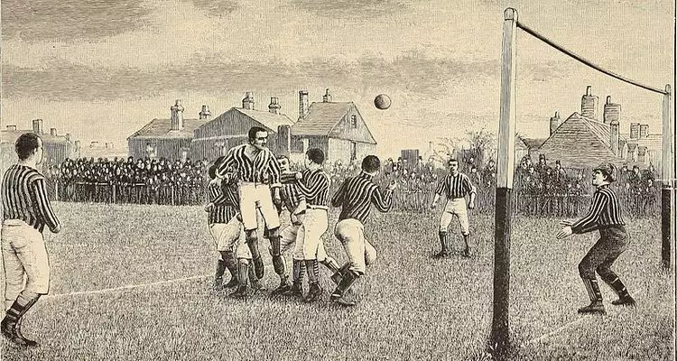

HISTÓRIA DO FUTEBOL

O futebol moderno surgiu na Inglaterra no século XIX. Antes disso, cada escola e região jogava de um jeito diferente, com regras próprias. Para organizar o esporte, representantes de clubes ingleses fundaram, em 1863, a The Football Association, que criou regras oficiais para o jogo, como a proibição do uso das mãos, a definição do tamanho do campo, das faltas e da organização das equipes. A partir desse momento, o futebol se separou do rúgbi e passou a ser praticado de forma organizada, dando origem ao futebol moderno.
Copa do Mundo
Hístoria
A FIFA criou a Copa do Mundo em 1928, idealizada por Jules Rimet. A primeira edição aconteceu em 1930, no Uruguay, que foi o primeiro campeão. O torneio cresceu ao longo dos anos e se tornou a maior competição de futebol do mundo, sendo realizado a cada quatro anos. Após uma pausa durante a Segunda Guerra Mundial, voltou em 1950 no Brazil, marcado pelo “Maracanazo”. Com o crescimento do esporte, o número de seleções aumentou de 16 para 24, depois para 32 e, a partir de 2026, para 48 participantes. Entre os maiores campeões estão Brazil, Germany, Italy e Argentina. A história da competição também ficou marcada por grandes jogadores, como Pelé, Diego Maradona e Lionel Messi.


.svg)